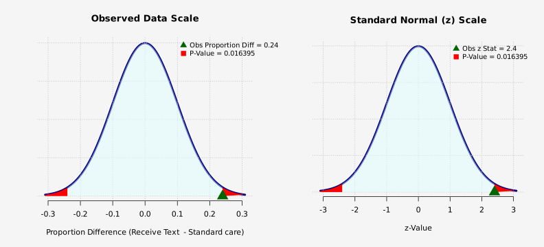
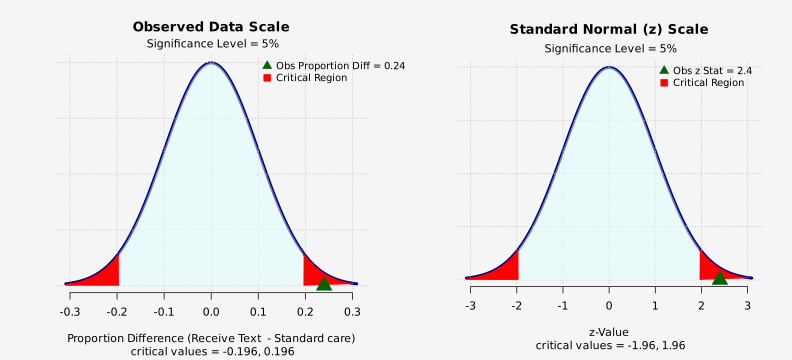

Data Summary
Counts: Medication Adherence by Patients
| - | Yes | No | Total |
|---|---|---|---|
| Receive Text | 32 | 8 | 40 |
| Standard care | 28 | 22 | 50 |
Two Population Proportion Test of Hypothesis
Method: Large Sample z Test (Pooled Standard Error)
Success = Yes
Population 1 = Receive Text , Population 2 = Standard care
Sample Size: Receive Text = 40, Standard care = 50
Number of Successes: Receive Text = 32, Standard care = 28
Proportion of Success: Receive Text = 0.8, Standard care = 0.56
Significance level = 5%
Alternative Hypothesis Ha: Proportion of 'Receive Text - Standard care' is not equal to 0
| Proportion Receive Text | Proportion Standard care | Difference | Std Error | Obs z Stat | 2.5% z-Lower Critical | 2.5% z-Upper Critical | P-Value | BFB |
|---|---|---|---|---|---|---|---|---|
| 0.8 | 0.56 | 0.24 | 0.1 | 2.4 | -1.95996 | 1.95996 | 0.0163951 | 5.45844 |
- Test is significant at 5% level.
- Bayes Factor Bound (BFB): The data imply the odds in favor of
the alternative hypothesis is at most 5.458 to 1, relative to the null hypothesis.
the alternative hypothesis is at most 5.458 to 1, relative to the null hypothesis.
P-value Graph: Large Sample z, Pooled SE
Null density (in units of data): Normal; mean = 0 , sd = 0.1
Alternative Hypothesis Ha: Proportion of 'Receive Text - Standard care' is not equal to 0

Critical Region Graph: Large Sample z, Pooled SE
Null density (in units of data): Normal; mean = 0 , sd = 0.1
Alternative Hypothesis Ha: Proportion of 'Receive Text - Standard care' is not equal to 0
